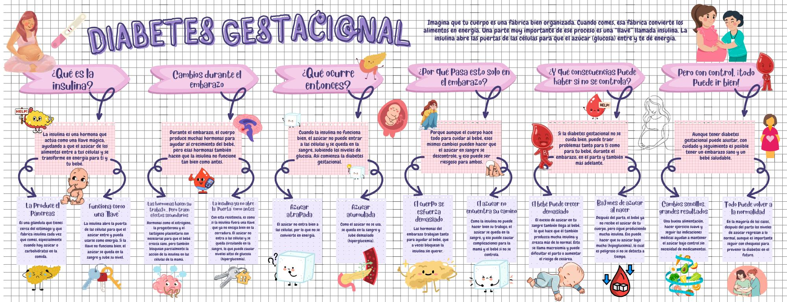

La diabetes gestacional (DG) es una condición en la que los niveles de azúcar en la sangre (glucosa) se elevan durante el embarazo en mujeres que no tenían diabetes previamente.
Es una de las complicaciones médicas más comunes durante la gestación y, si no se maneja adecuadamente, puede tener implicaciones tanto para la madre como para el bebé.
Durante el embarazo, la placenta produce hormonas que son vitales para el desarrollo del bebé. Sin embargo, estas hormonas pueden hacer que el cuerpo de la madre se vuelva más resistente a la insulina.
La insulina es una hormona producida por el páncreas que actúa como una "llave" que permite que la glucosa (azúcar) de los alimentos entre en las células para ser utilizada como energía.
En la diabetes gestacional, es como si las hormonas de la placenta "bloquearan" esta llave, impidiendo que la insulina funcione eficazmente.
El páncreas de algunas mujeres no puede producir suficiente insulina extra para superar esta resistencia, lo que lleva a un aumento de los niveles de glucosa en la sangre.